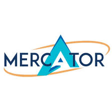
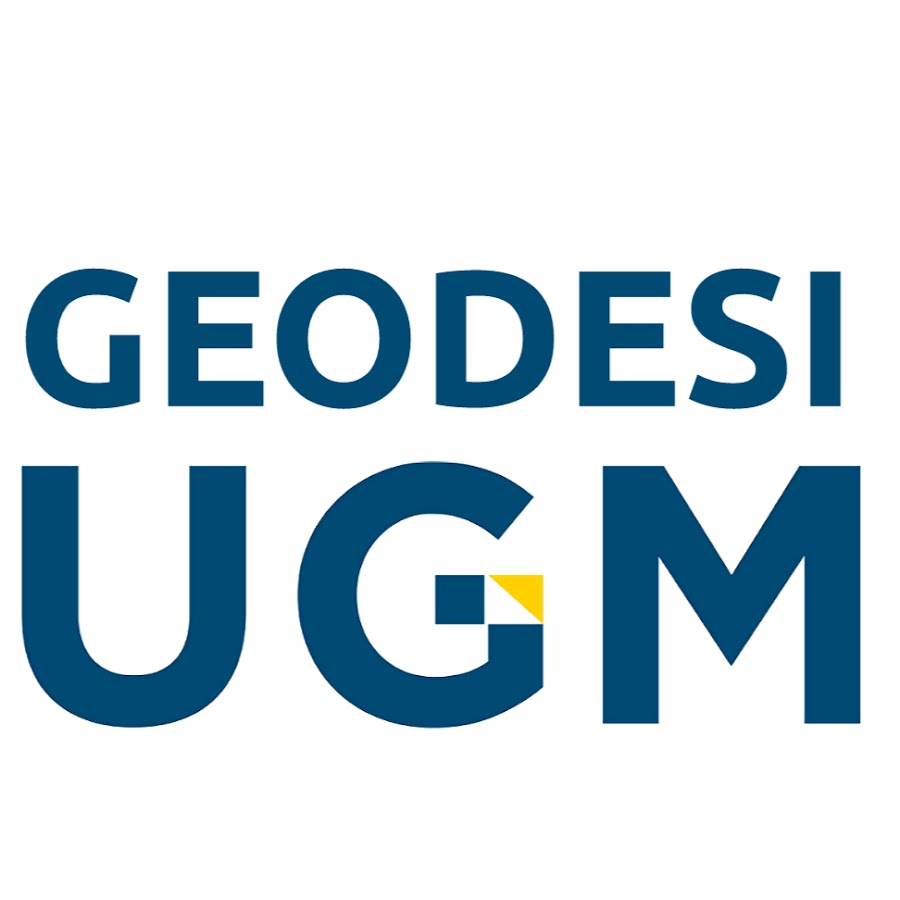

Internship Experience
Pengalaman internship selama 2 tahun terakhir.
Adhi Karya-Acset KSO
Proyek Pembangunan Jalan Tol Jakarta- Cikampek II Selatan Paket 2B (Internship)
- Melakukan pengukuran stake out pada bagian abutment, LC, rigid, bore pile menggunakan Total Station
- Melakukan pengukuran elevasi bagian LC, rigid, galian-timbunan, retaining wall menggunakan Waterpass
- Membuat Work Breakdown Structure pembangunan jalan tol Jakarta-Cikampek II Selatan
- Mempelajari Detail Engineering Design
Badan Pertanahan Nasional (ATR/BPN) Kota Salatiga
Seksi Survei dan Pemetaan (Internship)
- Melakukan pengukuran di lapangan menggunakan RTK (Real Time Kinematic)
- Melakukan verifikasi dokumen ukur pada web KKP (Komputerisasi Kantor Pertanahan)
- Melakukan validasi urat ukur pada sloka etnik
- Melakukan klasifikasi pada gambar ukur
- Melakukan pengolahan data pada software AutoCad
Organisational Experience
Pengalaman Organisasi selama 3 tahun terakhir.
-
Aug 2023 - March 2025
Keluarga Mahasiswa Teknik Geodesi
Koordinator pemeriksaan kesehatan lansia dan perlombaan anak anak di dusun sendat, Kulon Progo; Koordinator geodesi mengajar; Koordinator geodesi ke Panti Asuhan; Staff acara konservasi penyu dan penanaman pandan di Pantai Pelangi.
-

May 2024
Mercator 2024
Menjadi Liaison Officer bagi peserta lomba jelajah Yogyakarta tingkat SMA; Menjadi Liaison Officer bagi peserta LKTIN tingkat universitas.
-
Mar 2023 - Jun 2023
Komunitas Sekolah Marjinal
Menjadi relawan mengajar; Menjadi kakak asuh bagi anak-anak kaum marjinal di Desa Trini; Mengajarkan softskill dan hardskill; Menginisiasi proyek-proyek kreatif yang dapat membantu meningkatkan minat belajar anak-anak Desa Trin
-

Mar 2023 - May 2023
Sidang Umum MTG
Membuat rundown dan juknis acara; Menentukan tema besar; Mengatur jalannya acara secara teknis
-